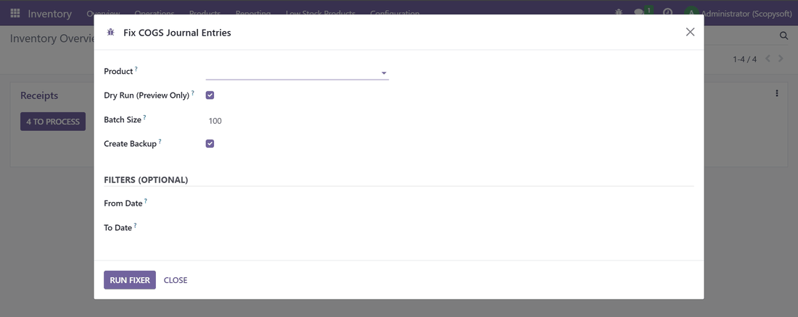
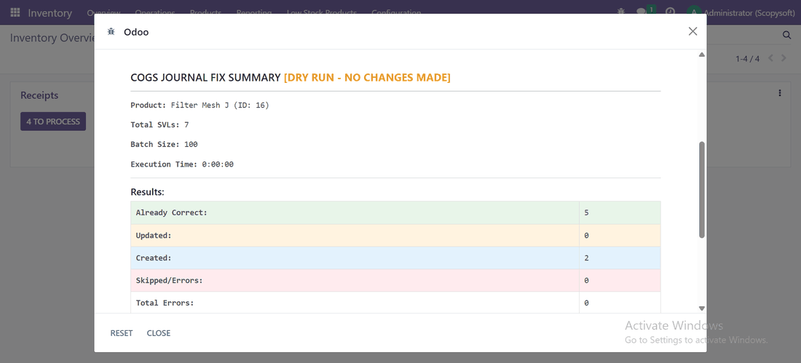
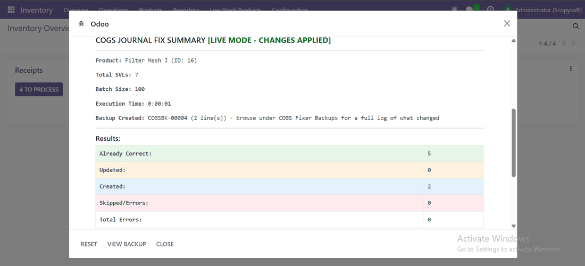
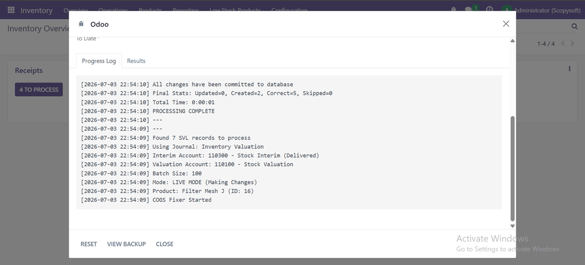
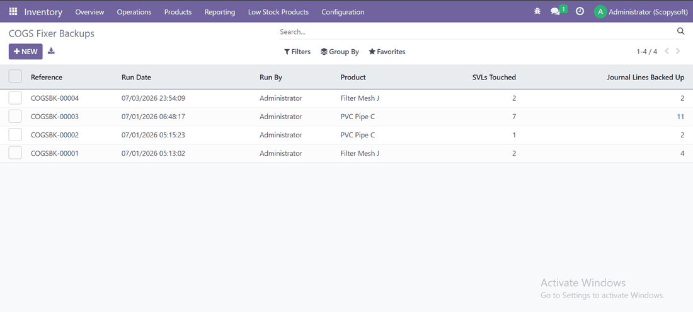
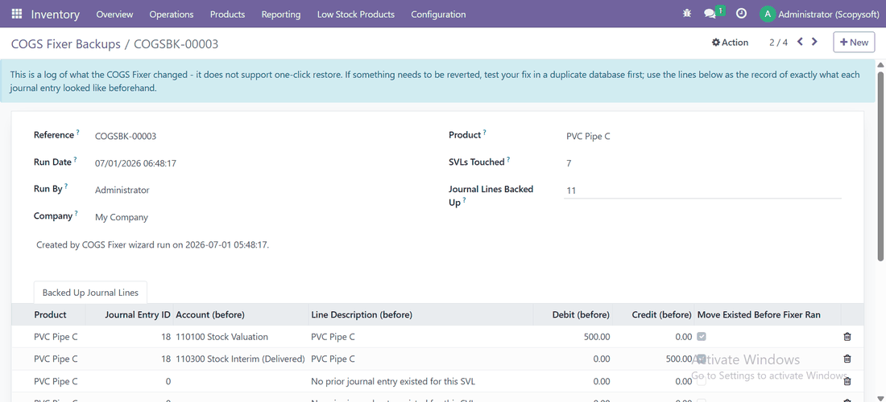

For products where Odoo's stock moves and journal entries have drifted apart - missing entries, wrong debit/credit amounts, or COGS reports that don't add up.
Preview every change before anything is written to your books.
SVLs with no journal entry get one created, correctly balanced.
Mismatched debit/credit lines get corrected to match the SVL.
Target one period instead of a product's whole history.
Every run is logged with the exact before/after values, browsable in the UI.
Download a record of what changed, per SVL, for your files.

Select the product, optionally set a date range, and choose dry run or live before anything happens.

See exactly what would be created, updated, or is already correct - no changes made yet.

Same summary, this time with real changes committed and a backup reference you can look up later.

A timestamped log of every step, account, and journal used during the run.

Browse past runs under COGS Fixer Backups, with the product and line counts for each one.

Exactly what each journal line looked like before the fix - account, debit, credit, all of it.
It's built around standard costing. If your category uses a different method, review the proposed entries carefully in dry run before applying.
Locked or reconciled entries can't be reset, so the fixer skips them and logs the specific reason instead of guessing.
Every run is logged with full before/after values under COGS Fixer Backups, but there's no automatic restore. Test in a duplicate database first.
Yes - it only touches standard stock_account and accounting models, no Community-only dependencies.
Built by ScopySoft · Odoo 16